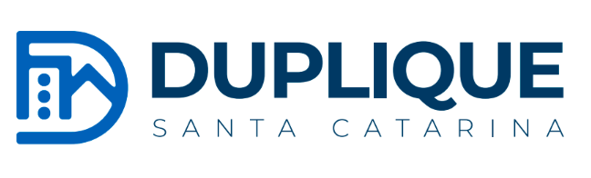

Um diagnóstico executivo de 15 competências da gestão condominial. Ao final, você recebe seu Score, seu posicionamento em relação a outros síndicos avaliados, e, se atingir a nota mínima, o Selo Síndico de Alta Performance.
Preencha seus dados para liberar seu Score, seu Ranking e seu diagnóstico completo.
Seus dados são usados apenas para gerar seu diagnóstico e enviar seu certificado. Não compartilhamos com terceiros.
Calculando seu Score de Alta Performance...